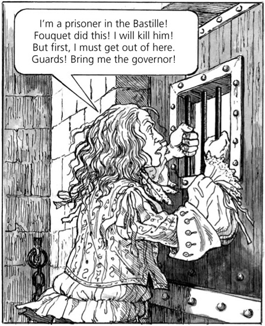

7
Louis và Philippe

Nhưng không có tiếng trả lời. Không lính gác nào đến. Louis vừa giận vừa sợ. Ông nhấc chiếc ghế lên và ném vào tường. Trong một giờ, ông gào thét và la hét. Nhưng rồi ông bình tĩnh lại. Ông bắt đầu suy nghĩ rõ ràng hơn.
Vài giờ sau, có tiếng động bên ngoài phòng giam của Louis. Sau đó, cánh cửa mở ra và một lính gác bước vào với một ít thức ăn.
‘Ông đã gây ra rất nhiều tiếng ồn và đã làm hỏng ghế của ông,’ người lính gác nói. ‘Tại sao ông làm thế, thưa ngài Marchiali? Ông luôn là một tù nhân điềm tĩnh và hiểu lí lẽ. Xin hãy đừng làm thế nữa.’
‘Hãy lắng nghe tôi!’ Louis nói. ‘Tôi có một thông điệp cho viên thống đốc. Hãy nói với ông ta, “Nhà vua của nước Pháp muốn nói chuyện với ông ta.” Hãy làm thế! Làm ngay đi!’
Người lính gác cười. Sau đó, anh ta nhanh chóng bước ra khỏi phòng giam và khóa cửa lại.

Tại ngôi nhà lớn ở Vaux, Philippe đang ngủ trên giường của nhà vua. Đêm xuống, rồi ngày lên, và Aramis lặng lẽ bước vào phòng. Ông đánh thức chàng trai trẻ.
‘Sự việc đã hoàn thành, thưa ngài,’ Aramis nói với Philippe. ‘Mọi chuyện đều diễn ra tốt đẹp.’
‘Người bạn của chúng ta, Porthos, đâu rồi?’ Philippe hỏi. ‘Ông ấy phải có một món quà. Ông ấy sẽ trở thành công tước.’
Aramis cười.
‘Tại sao ngài cười, Giám mục?’ Philippe nói.
‘Ôi, thưa ngài!’ Aramis nói. ‘Vâng, hãy phong Porthos làm công tước. Ông ấy sẽ chết vì sung sướng mất!’
Bất thình lình, có tiếng gõ cửa.
‘D’Artagnan đến rồi,’ Philippe nói. ‘Anh ta đã đến để nhận lệnh của ngài.’
‘Bây giờ ngài không được nói chuyện với D’Artagnan,’ Aramis nói. ‘Anh ta sẽ nghi ngờ. Tôi sẽ đuổi anh ta đi.’ Ông vội vã đến cửa.
D’Artagnan thấy Aramis đi ra khỏi phòng của nhà vua. Anh ta ngạc nhiên.
‘Aramis!’ anh ta nói. ‘Tại sao ông lại ở đây?’
Aramis mỉm cười, nhưng ông không trả lời câu hỏi.
‘Còn sớm,’ ông nói. ‘Nhà vua không muốn nói chuyện với bất kỳ ai bây giờ. Nhà vua rất mệt.’
‘Nhưng sáng nay nhà vua muốn nói chuyện với tôi,’ D’Artagnan nói.
‘Quay lại sau đi, D’Artagnan! Sau nữa!’ tiếng nhà vua cất lên từ bên trong Căn phòng Vàng.
Aramis đưa cho D’Artagnan một tờ giấy. ‘Đây là lệnh đầu tiên trong ngày của nhà vua,’ ông nói.
D’Artagnan đọc tờ giấy. ‘Ồ!’ anh ta nói.
‘Tôi sẽ đi với anh đến gặp ngài Fouquet,’ Aramis nói. ‘Ông ấy sẽ rất vui khi gặp chúng ta. Bây giờ ngài đã hiểu chưa, D’Artagnan?’
‘Vâng,’ viên đội trưởng của Đội lính ngự lâm của nhà vua nói. Nhưng anh ta nghĩ, ‘Không, không! Tôi không hiểu. Nhưng tôi sẽ tuân lệnh nhà vua!’
D’Artagnan nhìn Aramis một cách cẩn thận. ‘Nói cho tôi biết,’ anh ta nói. ‘Ông đã trở thành bạn của nhà vua từ khi nào? Ông chỉ nói chuyện với nhà vua có ba lần trong đời thôi mà!’
‘Tôi đã nói chuyện với nhà vua hơn một trăm lần,’ Aramis nói. ‘Nhưng những cuộc gặp của chúng tôi là bí mật!’
Mục lục
- Trang tiêu đề
- Trang bản quyền
- Mục lục
- Ghi chú về tác giả
- Ghi chú về câu chuyện
- 1 Nhà ngục Bastille, Paris
- 2 Tù nhân
- 3 Cung điện Louvre, Paris
- 4 "Con sẽ trở thành một vị vua vĩ đại"
- 5 Ngôi nhà lớn ở Vaux
- 6 "Ta là vua của nước Pháp!"
- 7 Louis và Philippe
- 8 Fouquet khám phá ra bí mật
- 9 Âm mưu của giám mục
- 10 Hai người anh em
- 11 Cuộc họp ở Nantes
- 12 Belle-Isle
- 13 Trốn thoát
- 14 Người lính ngự lâm cuối cùng